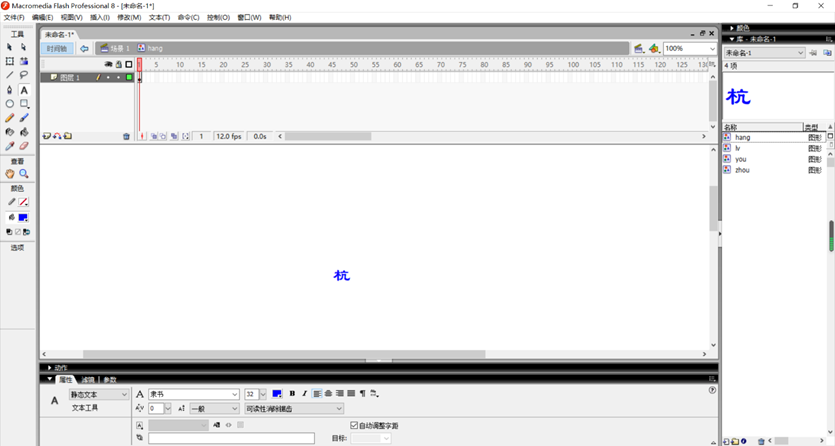
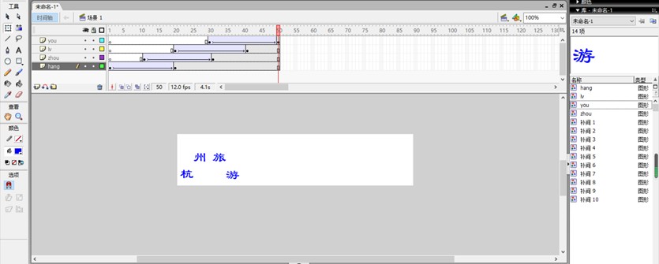
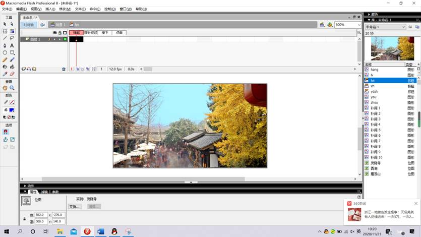
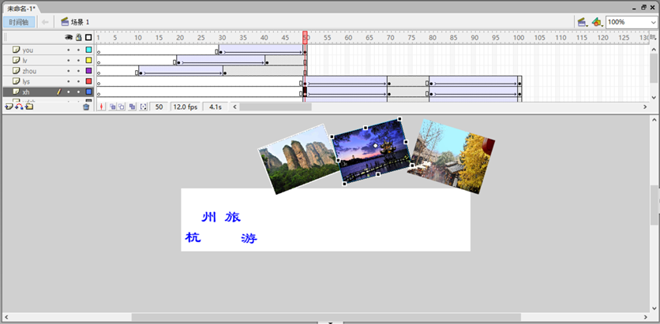
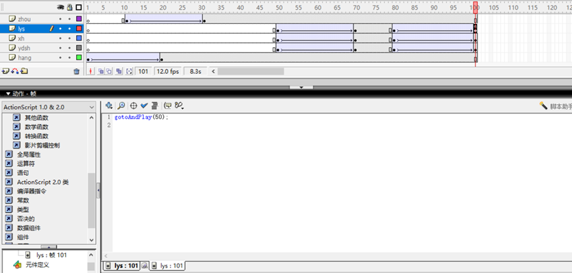
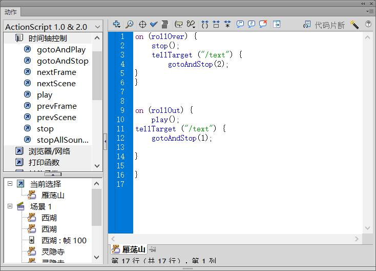
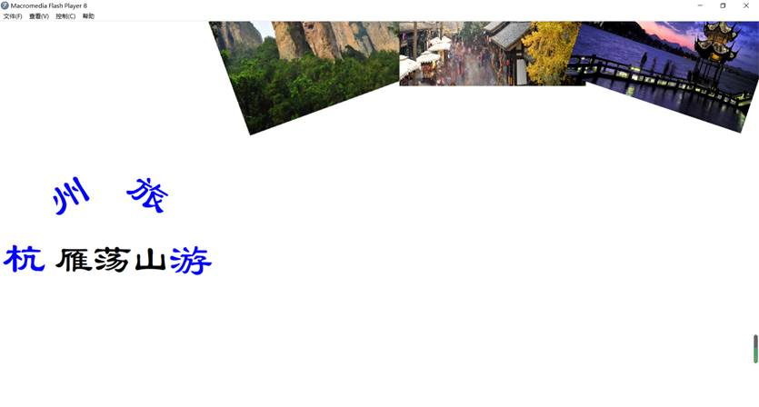
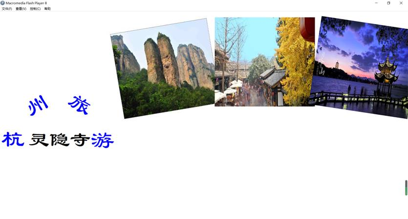
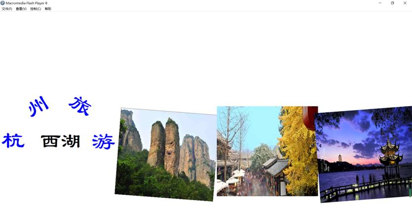

一.实验目的
(1)熟悉工具箱的使用。
(2)掌握各种类型组件的建立。
(3)学会渐变动画的制作。
(4)学会为按钮、电影剪辑设置动作。
二.实验内容
创建由按钮控制的电影剪辑播放、停止的交互式动画。
三.实验环境
Windows10+Flash CS6
四、实验步骤（对照截图具体说明，尽量详细）
1.打开Flash CS6，新建ActionScript 2.0，设置文件大小为550px×120px，背景为白色。
2.建立内容分别为“杭”、“州”、“旅”、“游”四个图形组件
(1)创建一个新的Flash文件。
(2)执行Insert(插入)→New Symbol(创建新元件)命令，创建一个名为“hang”的Graphic(图形)组件。使用文字工具在组件模式中写一个“杭”字，在字体中设置字体为“隶书”，大小为“32”，颜色为设为蓝色。
(3)按照步骤2的方法，创建名为“zhou”、“lV”、“you”的Graphic组件。
(4)单击Scene1(场景1)图标，从组件编辑模式切换到主场景。
3.在场景Scene1(场景1)中制作“杭州旅游”文字变形动画。
(1)执行Window(窗口)→Library(库)命令打开图库面板，将图形组件“hang”拖入主场景中。
(2)选中“杭”字，执行Modify(修改)→Break Apart(分离)命令（通常执行两次）把“杭”字图形组件分离。
(3)单击第20帧，按右键插入关键帧，把第1帧中的“杭”字拖到场景左边中间。
(4)单击第1帧，选中“杭”，点击工具箱中的变换工具(任意变形工具)，调整“杭”字的大小和方向，把变换好的“杭”字拖到场景之外的区域。
(5)单击第1帧，在第一帧上点右键，选择创建补间动画，则在第1帧至第20帧之间建立了“杭”字的形状渐变动画。（Enter键可测试动画效果，或者“控制”中的测试场景）
(6)单击新建层图标，插入一个新层zhou，单击第10帧，按右键键插入关键帧，在第10～30帧，依照步骤l～5的方法，创建“州”字的形状渐变动画。
(7)单击新建层图标，插入一个新层lv，单击第20帧，按右键键插入关键帧，在第20～40帧，依照步骤l～5的方法，创建“旅”字的形状渐变动画。
(8)单击新建层图标，插入一个新层you，单击第30帧，按右键键插入关键帧，在第30～50帧，依照步骤1～5的方法，创建“游”字的形状渐变动画。
动画结束后“杭州旅游”四个字排成一排，为了好看些，也可让四个字的最终效果成为弧形，如图E3.1所示。

4.建立风景点图片按钮组件
(1)执行Insert(插入)→New Symbol(创建新元件)命令，创建名为“ydsh”的Button(按钮)组件。
(2)在按钮组件编辑模式下，在UP(弹起)状态把一幅雁荡山的风景图片拖入工作区。
(3)鼠标单击Hit(点击)，按右键键插入关键帧.
(4)按照步骤l～3创建名为“lys”的灵隐寺图片Button(按钮)组件，和名为“xh”的西湖图片Button(按钮)组件。
(5)转换组件编辑模式到主场景。

5.制作风景点图片的运动渐变动画
(1)在主场景中，单击新建层图标，插入一个新层ydsh。
(2)在第50帧，按右键插入关键帧。
(3)点击Windows(窗口)→Library(库)，打开库窗口，将我们在(标题4)中制作的风景点图片按钮组件“ydsh”，拖入主场景中，把按钮组件移动到场景之外，动画开始时，它从场景之外移动到场景中来。
(4)在第70帧，按右键键插入关键帧，把“ydsh”按钮组件移动到场景之中，并安排好合适的位置。
(5)在第50帧，点右键，选择创建传统补间动画，这样在第50至第70帧之间就建立了“ydsh”按钮组件从场景之外移入场景之中的运动渐变动画。
(6)在第80帧，按右键键插入关键帧
(7)在第100帧，按右键键插入关键帧，并把“ydsh”按钮组件移动到场景以外。
(8)在第80帧，点右键，选择创建传统补间动画，，这样在第80至第100帧之间就建立了“ydsh”按钮组件从场景之中移入场景之外的运动渐变动画。

到此，我们就在第50至第100帧之间建立了“ydsh”按钮组件的运动渐变动画，开始时按钮组件从场景之外移入场景之中，在场景中停留一下后，又从场景之中移出场景之外。
(9)单击新建层图标，插入新层lys和xh，按照步骤1～8的方法，建立“lys”和“xh”两个风景点按钮组件的运动渐变动画。可以根据自己的要求，设置图片移出移入的方向和停留在场景中的位置。
(10)单击第100帧，右击，在动作面板中“全局函数”中的“时间轴控制”，双击“gotoandplay()”，在“gotoandplay(帧)”中把“帧”改为“50”。（目的是：从50帧重复播放50到100帧）


6.创建电影剪辑组件“text”，并把其安放在场景中
(1)执行Insert（插入）→New Symbol（创建新图元）命令，创建名为“text”的“Movie clip”（影片剪辑）组件。
(2)按右键键插入3个关键帧。
(3)在动作面板中找到在动作面板中“全局函数”中的“时间轴控制”的“stop”，双击此项，把4个关键帧的动作都设置为停止（包括第一帧，共4个）。
(4)第1帧设为空白，在第2、3、4帧分别写上三张风景点图片中所示风景点的名称——“雁荡山”、“灵隐寺”、“西湖”。
(5)转换组件编辑模式到主场景，单击新建层图标，插入一个新层text。
(6)点击Windows（窗口）→Library（库），打开库窗口，将刚才制作的电影剪辑按钮组件“text”拖入主场景中，并安排好合适位置，这里将其放在“杭州旅游’，四字的下面。
(7)点击“text”影片剪辑按钮，在右侧的Properties（属性）面板中为电影剪辑组件取名为“text”。
7.设置按钮实例的动作，当鼠标点击风景点画面的时候，风景点图片动画停止运动，并在场景中显示风景点的名称。
(1)选中第5层，在第50帧，单击“ydsh”图片按钮，并右击->动作。
(2)在动作面板列表中找到全局中的影片剪辑控制中的on，双击此项，然后在右侧Event中选择Roll Over。
(3)在动作面板左侧列表中找到时间轴控制中的“stop”，双击此项，使鼠标滑过或者点击“ydsh”图片按钮的时候，图片按钮停止运动。
(4)在动作面板左侧列表中找到否决的动作中的“Telltarget”，双击此项，然后在右侧“Target”中填写“/text”。（双引号不要丢掉，而其是英文下的双引号）
(5)在动作面板左侧列表中找到时间轴控制中的“gotoAndstop”，双击此项，然后在右侧“Frame”中填写“2”。
(6)在动作面板左侧列表中找到全局中的影片剪辑控制中的“on”，双击此项，然后在右侧“Event”中选择“Roll Out”。
(7)在动作面板左侧列表中找到时间轴控制中的“play”，双击此项，使鼠标滑过或者点击“ydsh”图片按钮的时候，图片按钮停止运动。
(8)在动作面板左侧列表中找到否决的动作中的“Telltarget”，双击此项，然后在右侧“Target”中填写“／text”。
(9)在动作面板左侧列表中找到时间轴控制中的“gotoAndstop”，双击此项，然后在右侧“Frame”中填写“1”。（1对应的为空白帧，2,3,4分别对应三张风景的图片）
 (10)选中第6层，在第50帧，单击“lys”图片按钮实例。
(11)按照步骤2～8，设置“灵隐寺”图片按钮实例。
(12)选中第7层，在第50帧，单击“xh”图片按钮实例。
(13)按照步骤2～8，设置“西湖”图片按钮实例。
8.输出电影为.swf格式
执行Fill(文件)→Export Movie(导出电影)命令，在弹出的对话框中命名文件名称，并设置保存类型为“.swf”，保存文件。
放映该电影，观众可参与控制电影的播放。当电影载入时，“杭州旅游”四个字从四面八方飞入场景之中，然后3幅旅游景点的图片向场景中移动，鼠标单击或者滑过风景点图片时，风景点图片停止运动，并在“杭州旅游”四字的下方显示出旅游景点的名字。鼠标滑离风景点后，风景点图片动画继续运动。



五、实验体会 |